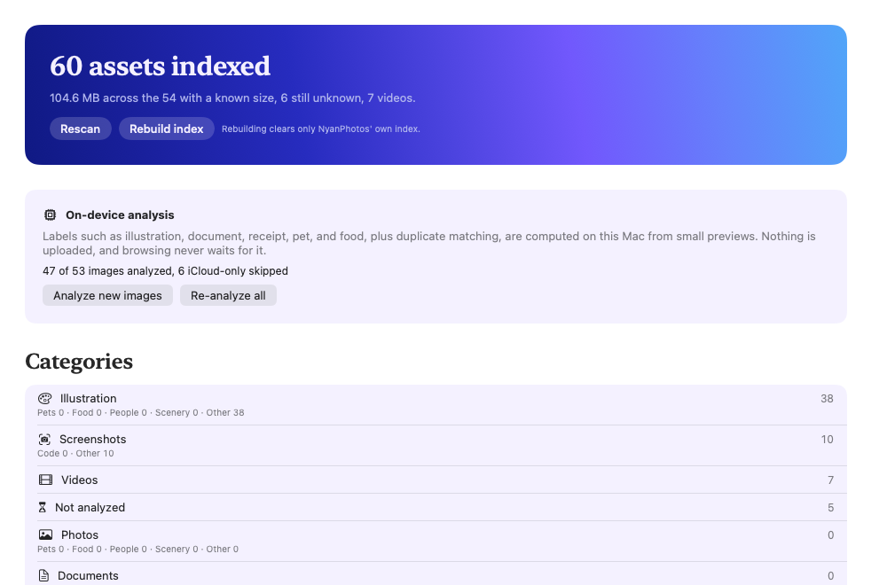
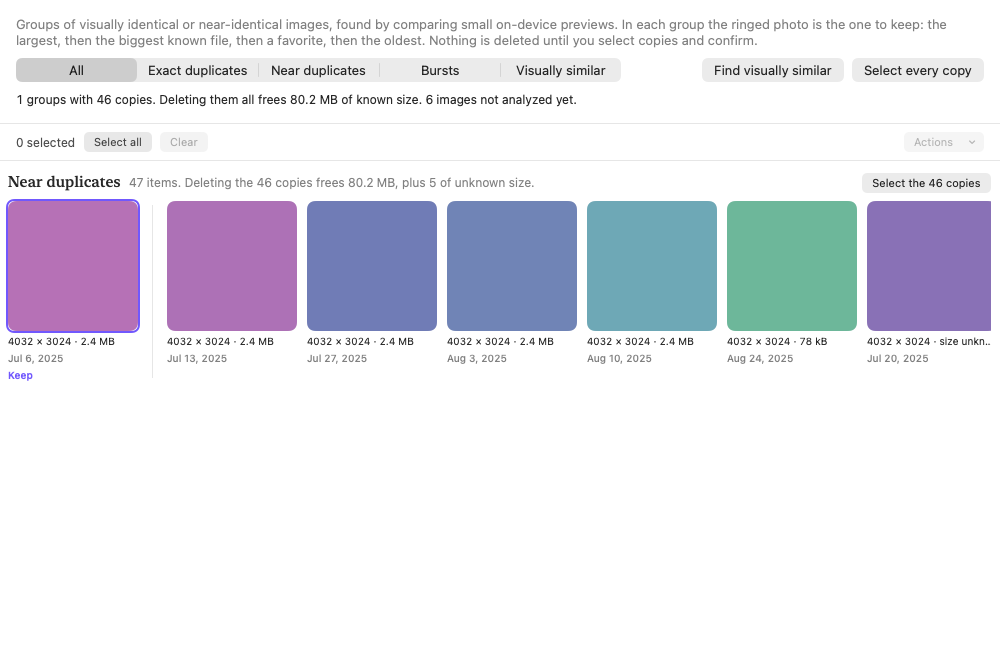

What it finds
Photos, illustrations, screenshots, documents
Every image gets one medium and one subject: pets, food, people, scenery, code, receipts. Labels come from Apple's Vision framework on your Mac.
Duplicates and visually similar images
Exact copies, near copies, bursts, and re-saved versions of the same picture, with the one to keep marked and the rest one click from selected.
Tiny files, low resolution, large videos
Built-in collections over sizes and dimensions. Unknown sizes are shown as unknown, never as zero.
Your own rules
A visual rule editor over dates, dimensions, sizes, and labels with a confidence you set. Every match shows why it is there.
Stripes mean where a rule gets its facts:file detailson-device analysisyour rules
What it looks like


Install the beta
- Download the zip above and unzip it. Drag NyanPhotos.app to Applications.
- This beta is signed to run locally but not notarized, so macOS blocks the first launch. Clear the quarantine flag once in Terminal, or right-click the app and choose Open:
xattr -dr com.apple.quarantine /Applications/NyanPhotos.app - Open it. macOS asks for Photos access; read and write access lets you make albums and delete duplicates later, each after a confirmation.
- Press Scan on Overview, then Analyze new images when you want labels and duplicates. Both can be cancelled and resumed, and browsing never waits for them.
Large libraries: indexing 100,000 assets takes a few minutes; analysis runs at a few thousand images an hour and picks up where it left off after a relaunch.
Privacy
NyanPhotos has no network access at all. The app is sandboxed with the Photos entitlement only, so it cannot open a connection even if it wanted to. Its index lives in your user Library and holds references, metadata, labels, preview hashes, and image embeddings, never the pictures themselves. Settings shows the size on disk and can clear it.
Report a problem
Because nothing leaves your Mac, there is no automatic crash reporting. If something goes wrong, open Console.app, filter by org.nyan.NyanPhotos, and send those lines with the version from NyanPhotos › About to the issue tracker. Crash logs are in ~/Library/Logs/DiagnosticReports.